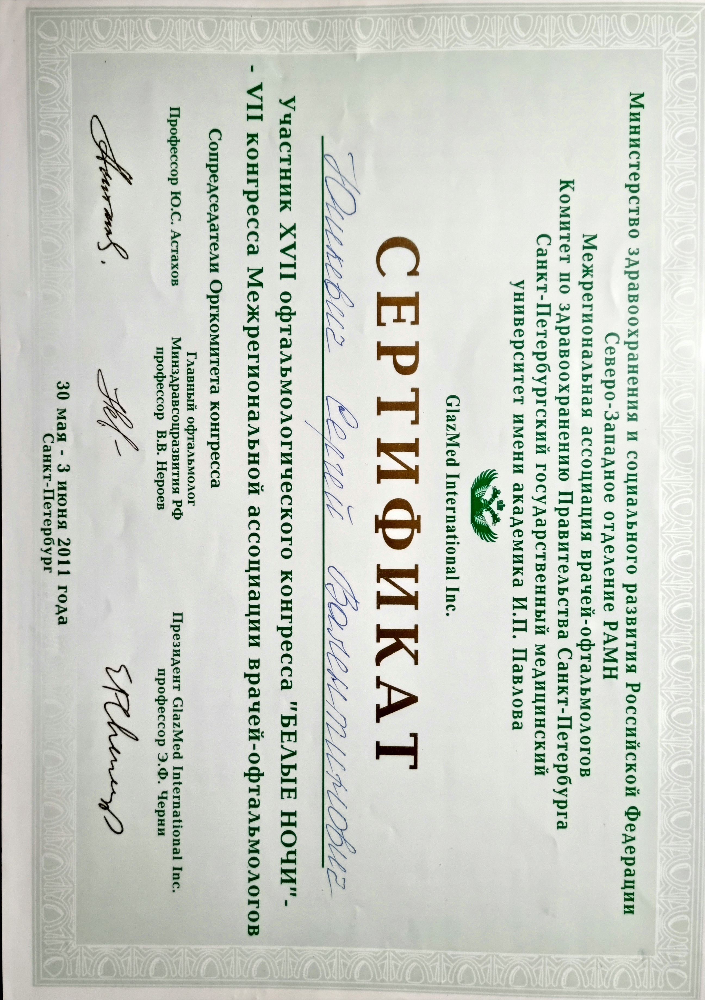
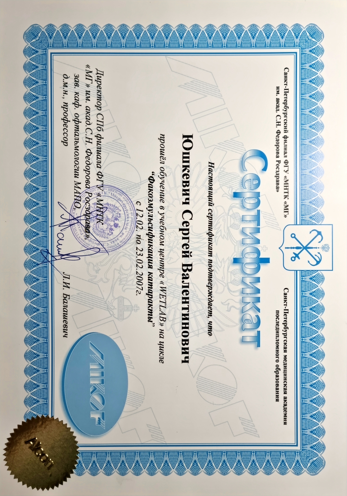
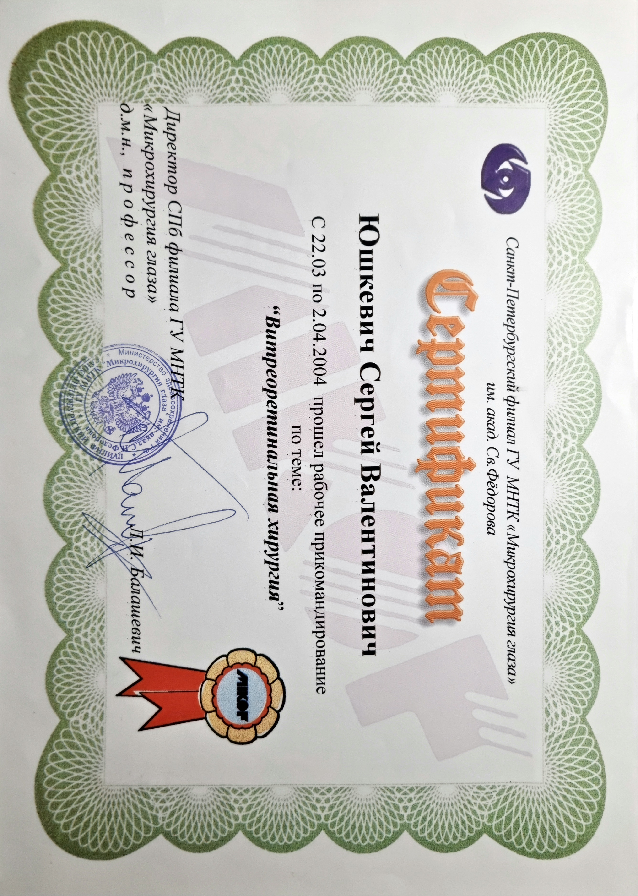

20000+
лазерных вмешательств


27
Лет опыта00
Лазерных Коррекций Зрения
Международные конференции
Здесь вы можете найти список некоторых конференций, которые я посетил. Все они посвящены моей области интересов и медицинской практике, и каждый из них дал мне дополнительные знания в области ухода за глазами.
«Лазерные технологии в медицине»
Гродно, 2001
«Региональные проблемы офтальмологов Причерноморья»
Одесса, 2004
18-й Конгресс немецкого общества офтальмологов по имплантации интраокулярных линз и рефракционной хирургии DGII
Хайдельберг, 2004
17-й офтальмологический конгресс «Белые Ночи»
Санкт-Петербург, 2011
9-й съезд офтальмологов Республики Беларусь с международным участием
Минск, 2019


Профессиональный опыт
Здесь можно просмотреть все этапы моего личного пути в профессиональной глазной медицине.
- 1994
- Окончил Минский государственный медицинский институт по специальности «лечебное дело».Минск, Беларусь.
- 1995
- После стажировки на базе 10-й городской клинической больницы города Минска во 2-м отделении микрохирургии глаза получил квалификацию врача-офтальмолога.Минск, Беларусь.
- 1995-1997
- Работал врачом-офтальмологом в лазерном центре и кабинете функциональной глазной диагностики, кабинете контактной коррекции зрения 10 ГКБ г. Минска.Минск, Беларусь.
- 1997-2003
- Работал в кабинете лазерной микрохирургии глаза по лечению диабетической ретинопатии Республиканского Консультативного Эндокринологического Центра г. Минска. Минск, Беларусь.
- 2002
- Прошел трёхмесячную стажировку в глазной клинике Neukolln у профессора Dr. D.T. Pham.Berlin, Germany.
- 2003-2012
- Работал лазерным хирургом в частной клинике «Новое зрение» на лазерных установках для эксимер-лазерной коррекции зрения фирм «NIDEK» и «ZEISS».Минск, Беларусь.
- 2004
- Прошёл обучение в МНТК «Микрохирургия глаза» по теме: «Витреоретинальная хирургия».Санкт-Петербург, Россия.
- 2007
- Прошёл цикл обучения «Факоэмульсификация катаракты».Санкт-Петербург, Россия.
- 2008
- Получил высшую категорию врача-офтальмолога.Минск, Беларусь.
- 2012
- Прошел обучение для работы на эксимер-лазерной установке компании «SCHWIND Eye Tech Solutions GmbH&Co KG».Минск, Беларусь.
- 2017
- Прошел тренинг-курс лазерной хирургии в центре компании «Abbot» в Барселоне.Барселона, Испания.
- 2017
- После прохождения курса переподготовки на базе ГУО «Белорусская медицинская академия последипломного образования» получил квалификацию «врач-организатор здравоохранения».Минск, Беларусь.
- 1998-2018
- На протяжении всего профессионального пути проходил все доступные курсы повышения квалификации на базе Белорусского государственного института усовершенствования врачей в 1998, 2001, 2003, 2008, 2010, 2013 и 2018 годах.Минск, Беларусь.
- 2013-Сегодня
- Работаю офтальмохирургом в частном медицинском центре «Оптимед».Минск, Беларусь.
Сертификаты
Особые сертификаты и документы об успешном прохождении дополнительных курсов.




